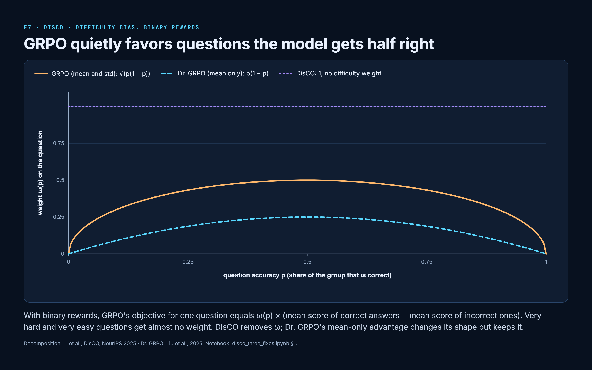
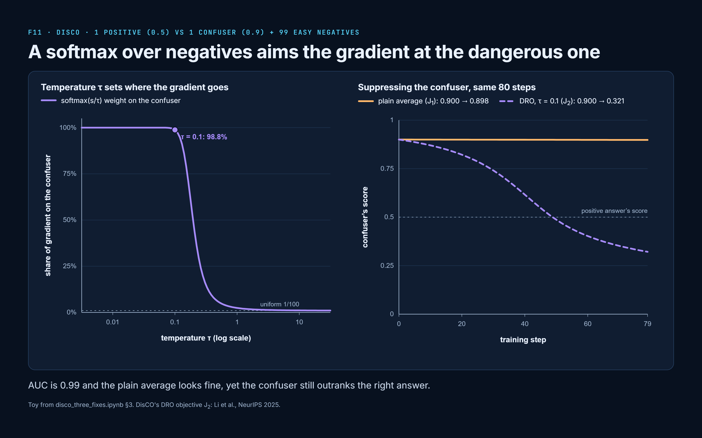
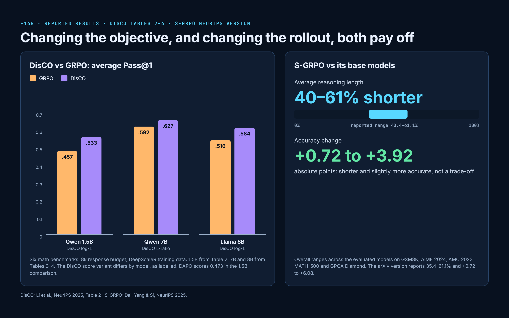

#N, to jump to slide NDisCO
Discriminative Constrained Optimization, from DisCO: Reinforcing Large Reasoning Models with Discriminative Constrained Optimization.
The story in one sentence: with binary rewards, GRPO's objective weights each question by a factor that depends on its difficulty, so medium-difficulty questions matter most. DisCO removes that weight, optimizes an explicit "score correct answers above incorrect ones" objective, and controls policy drift with a KL constraint instead of an always-on KL penalty.
Acronyms in this deck. DisCO Discriminative Constrained Optimization (Li et al., 2025) · GRPO Group Relative Policy Optimization (Shao et al., 2024) · DAPO Decoupled Clip and Dynamic sAmpling Policy Optimization (Yu et al., 2025) · Dr. GRPO Group Relative Policy Optimization Done Right (Liu et al., 2025) · KL Kullback–Leibler divergence · AUC area under the ROC curve · ROC receiver operating characteristic · DRO distributionally robust optimization · RL reinforcement learning. Full references: last slide.
Gang Li · Ming C. Lin · Tomer Galanti · Zhengzhong Tu · Tianbao Yang · NeurIPS 2025 · arXiv:2505.12366 · assumes the GRPO deck
How reasoning RL works
Start with a reasoning model $\pi_{\theta}$. For each question $q$, sample several answers:
A verifier gives each answer a binary reward:
Correct answers are positive examples; incorrect answers are negative examples. Nothing in between — no partial credit.
Notation (DisCO paper): $r$ is the reward and $x=\pi_\theta/\pi_{\text{old}}$ the importance ratio. The DAPO deck follows the DAPO paper instead and writes the ratio as $r_{i,t}$ and the reward as $R_i$.
watch the dots flow: question → model → verified answers
Every question has a difficulty $p(q)$
Define:
Because the reward is binary, $p(q)$ is simply the probability that the current model solves question $q$ correctly — averaged over many sampled attempts.
Each question's learning signal gets multiplied by $\omega(q)=\sqrt{p(q)(1-p(q))}$: plug that question's $p(q)$ into the formula, and you get how loudly its rollouts speak in the update.
Click a difficulty level above to see GRPO's weight for it.
The five ideas this deck uses
You don't need more than this to follow every derivation in the rest of the deck.
| Idea | What it means in this deck |
|---|---|
| Law of total expectation | Split any random draw into disjoint cases, and the overall average is the probability-weighted average of each case's average.
$\mathbb{E}[g]=P(A)\mathbb{E}[g\mid A]+P(B)\mathbb{E}[g\mid B]$
source ↗ |
| Bernoulli mean & variance | A reward that is always exactly 0 or 1, with $P(r=1)=p$. Averaging 0s and 1s just counts the 1s, so $\mathbb{E}[r]=p$. And since $r^2=r$ for 0/1 values, $\mathrm{Var}[r]=\mathbb{E}[r^2]-\mathbb{E}[r]^2=p-p^2=p(1-p)$. GRPO divides by that $\sigma=\sqrt{p(1-p)}$, which is exactly where the deck is headed. source ↗ |
| Importance ratio | The rollouts were written by $\pi_{\text{old}}$, but we want to score $\pi_\theta$. The ratio $x=\pi_\theta(o)/\pi_{\text{old}}(o)$ is the correction that lets you reuse those stale samples: it re-prices each one by how much the current policy's opinion of it has changed. Drift far from 1 and the reused samples stop being trustworthy — which is what clipping and trust regions are reacting to. source ↗ |
| KL divergence | $D_{\mathrm{KL}}(\pi_{\text{old}}\Vert\pi_\theta)=\mathbb{E}_{o\sim\pi_{\text{old}}}\!\left[\log\frac{\pi_{\text{old}}(o)}{\pi_\theta(o)}\right]$: the average log-surprise of judging the old policy's own outputs by the new policy. Zero only if the two agree everywhere, and never negative. That asymmetry is why DisCO constrains this direction specifically. source ↗ |
| AUC & discriminative learning | Generative learning asks "how probable is this answer?" — an absolute number per answer. Discriminative learning only asks "does the right answer score above the wrong one?" — a comparison, where just the gap matters. AUC is the score for exactly that: the chance a random positive outranks a random negative. source ↗ |
AUC = the chance a random positive beats a random negative
Five correct answers (green), five incorrect answers (red), each scored by the model. Drag the threshold: anything scored above it gets called "positive."
Slide the threshold from 1 down to 0 and the point on the right traces the whole ROC curve. The shaded area under it is the AUC — here it's 0.76: the model ranks a random correct answer above a random incorrect one about 76% of the time, not 100%.
From binary advantages to $\omega(q)$
Under the paper's population binary-reward analysis, a question solved with probability $p(q)$ has two possible normalized advantages:
At $p=0.1$, a rare correct answer gets $+3.0$ while a wrong answer gets $-0.33$.
Weight each branch by how often it occurs:
Finite sampled groups introduce estimation effects; $\omega(q)$ is exact in the population analysis.
Middle-difficulty questions receive the most weight

Details
$\omega(q)$ multiplies a question's contribution to the population objective; it is not a learned network parameter.
Hard: $p=0.01$
Rare successes are loud, but occur rarely.
Middle: $p=0.50$
The population weight peaks here.
Easy: $p=0.99$
The remaining mistakes receive less weight.
Related: Dr. GRPO (Liu et al., 2025) removes the per-group std division. In the same population analysis its weight becomes $p(q)(1-p(q))$, which is even more peaked at $p=0.5$; DisCO removes the weight altogether. 02_failure_lab.ipynb (Appendix D) plots all three weightings; disco_three_fixes.ipynb §1 races GRPO's and DisCO's.
Run it: disco_three_fixes.ipynb · §1, difficulty bias
GRPO's objective is a weighted discriminative objective
Start from GRPO's per-token term $f(x,A)=\min\!\big(xA,\ \mathrm{clip}(x,1{\pm}\varepsilon)A\big)$, with $x$ the importance ratio from the toolkit. Split the rollouts of one question into a correct pile ($A>0$) and a wrong pile ($A<0$). Inside each pile $A$ is one fixed number with a fixed sign, so it pulls straight out of the $\min$:
What remains in each pile is a score of the rollout: $s^+_\theta=\frac1{|o|}\sum_t\min(x_t,1{+}\varepsilon)$ for correct rollouts and $s^-_\theta=\frac1{|o|}\sum_t\max(x_t,1{-}\varepsilon)$ for wrong ones. Substitute them back, factor out the shared $\sqrt{p(1-p)}$, and GRPO's objective is:
Details
This is an exact identity in the paper's population binary-reward analysis; finite empirical groups add estimation effects. The KL term is handled separately, and the companion notebook verifies the population identity numerically.
Reading the symbols. $o^+$ = a rollout that was correct ($r=1$); $o^-$ = one that was wrong ($r=0$) — same question, sorted into two piles. $s_\theta(o,q)$ = the score the current model gives a rollout, i.e. how strongly it would produce that text. The superscript on $s$ is GRPO-specific: $s^+$ clips from above, $s^-$ from below, which is why they're two different functions here. DisCO uses one $s_\theta$ for both piles.
Raise the good, lower the bad
What "discriminative" actually means
A generative objective chases an absolute target: make this answer probable. A discriminative one only cares about a comparison: the right answer must outscore the wrong one. Only the gap $s(o^+)-s(o^-)$ appears above — no absolute level does.
Why that's the natural framing here
You rarely know how probable a correct solution "should" be, but you always know which of two rollouts was right. And because each question only needs its own answers separated, every question can be judged on equal footing — which is precisely what the $\sqrt{p(q)(1-p(q))}$ out front destroys.
Details
This is exactly the principle behind AUC (area under the ROC curve): rank positives above negatives. DisCO keeps this useful comparison, deletes the problematic weight $\sqrt{p(q)(1-p(q))}$, and redesigns the score functions.
Make correct answers outrank incorrect ones
Let $s_\theta(o,q)$ score how likely the current model is to generate answer $o$ for question $q$.
$\ell$ is any surrogate for "positive ranked above negative." The paper uses the identity $\ell(s)=s$ throughout, to keep the comparison with GRPO clean — so read the objective as just the gap itself.
The goal, for every question equally: $s_\theta(o^+,q) > s_\theta(o^-,q)$ — the correct rollout $o^+$ scores above the wrong one $o^-$. Note the single $s_\theta$: unlike GRPO, both piles are judged by the same yardstick.
Details
Log-likelihood score
Directly rewards the model for assigning probability to the positive trajectory.
Likelihood-ratio score
Measures how much the new model increases or decreases token probabilities relative to the old one.
Clipping buys safety with dead gradients
Clipping exists for a good reason: one rollout shouldn't be able to yank the policy far from $\pi_{\text{old}}$, because the further you move, the less those reused samples mean anything. So GRPO caps the ratio $x=\pi_\theta/\pi_{\text{old}}$:
The catch is how it enforces that: past the window the objective stops changing with $\theta$, so the derivative isn't damped, it's exactly zero. Drag the slider and watch:
Past $1+\epsilon$ the token's own term contributes exactly zero gradient to this update: it is not moved less, it is not moved at all. The non-clipping score keeps a live gradient everywhere.
positive-advantage token, $\epsilon=0.2$; the non-clipped curve is the log-likelihood score, whose derivative in $x$ is $1/x$
One clipping knob is doing two jobs

Details
It silences the tokens that moved most
Which tokens leave the window? The ones the update changed the most — typically rare tokens, where a large relative jump is still a tiny absolute one. Raising a token from 0.02 to 0.03 is exploration; with $\epsilon=0.2$ clipping stops it at 1.2× (0.024) while a common token keeps room to grow. Exploration gets throttled harder than exploitation, and entropy quietly collapses.
Dead gradients slow learning down
The paper's own charge: clipping "could cause the vanishing gradient, which may also slow down the learning process," on top of the entropy collapse reported by DAPO. And it's a per-token cap — it says nothing about the policy's total divergence, so thousands of tokens each sitting just inside $1+\epsilon$ still add up. You pay in dead gradients without getting a trust region.
One knob, two jobs
$\epsilon$ controls stability and how much signal survives. Tighten it for safety and learning stalls; loosen it for signal and training destabilizes. DAPO just widens the window ($\epsilon_{\text{high}}=0.28$), which moves the wall without removing it. DisCO splits the jobs: a smooth score that never dies, plus an explicit KL constraint that actually bounds drift.
Run it: disco_three_fixes.ipynb · §2, non-clipping scores
A KL constraint instead of an always-on penalty
Instead of always adding a KL penalty, DisCO solves a constrained problem (a trust region of radius $\delta$ around $\pi_{\text{old}}$):
Implemented with a squared-hinge penalty:
Inside the trust region
KL ≤ δ → penalty gradient is exactly zero.
The optimizer spends its entire budget improving reasoning, with nothing pulling it back.
Outside the trust region
KL > δ → penalty grows quadratically.
The update gets pulled back toward the old policy, hard, only when it actually strays.
Details
A plain always-on KL term, by contrast, drags on every single step — whether the policy is one step from the reference or a thousand.
Run it: disco_three_fixes.ipynb · §2, constraint vs. tax
Not all negative examples are equally useful

Details
A difficult question produces 1 positive and 100 negatives, scored like this:
| Answer | Score | Beaten by $o^+$? |
|---|---|---|
| $o^-_1$ (the dangerous one) | 0.900 | no — it outranks the positive |
| $o^+$ | 0.500 | — |
| $o^-_2 \ldots o^-_{100}$ | 0.001 | yes, all 99 of them |
AUC asks one question: pick a random negative — does the positive outrank it? That's a count of pairs, so it just tallies how many negatives fall below 0.5:
99% "correct" — while the single answer the model is most likely to actually produce is wrong. One bad negative can only ever cost you 1%.
The plain objective $J_1$ has the identical blind spot, because averaging hands every negative the same $\tfrac1{100}$ share of the gradient: $J_1 = 0.5 - \overline{s(o^-)} = 0.5-0.00999 \approx 0.49$. Looks finished. Isn't.
So DisCO replaces the average over negatives with a softmax-weighted one, temperature $\tau$:
Softly focus on the worst negative
Differentiate $J_2$ and the fix appears. Writing $d_i=s(o^-_i)-s(o^+)$, each negative's share of the gradient is no longer $\tfrac1n$ but
Same objective shape, reweighted attention. The two limits are the whole story: $\tau\to\infty$ flattens the softmax to $1/n$ and gives back the plain average; $\tau\to0$ concentrates it on $\arg\max_i d_i$, so $J_2\to s(o^+)-\max_i s(o^-_i)$ — only the most dangerous negative counts. Log-sum-exp is a smooth maximum.
On the previous example with $\tau=0.1$: $e^{0.9/0.1}=8103$ against $99\times e^{0.001/0.1}\approx100$, so the dangerous negative takes 98.8% of the gradient instead of 1%. Drag $\tau$ and watch it happen.
At high τ, attention spreads evenly — you recover the plain average (and its blind spot). Push τ small, and nearly 100% of the gradient locks onto the one negative that's actually fooling the model.
five negatives for display; bar height = score, label above = share of the gradient at the current $\tau$ · red = the hard negative, dashed green = the correct answer's score
Details
Run it: disco_three_fixes.ipynb · §3, imbalanced rollouts
DisCO training loop
- Copy the current policy into $\pi_{\text{old}}$.
- Sample responses and split them into positive and negative sets.
- Compute the hard-negative objective $J_2$.
- Estimate $D_{\mathrm{KL}}(\pi_{\text{old}}\Vert\pi_\theta)$.
- Update with the discriminative gradient plus the (usually dormant) constraint gradient.
Run it: disco_three_fixes.ipynb · §4, one DisCO loop end to end
Performance improves because each component has a job

Details
DeepScaleR's ~40.3k training pairs; average Pass@1 over six math benchmarks with an 8k response budget.
Average Pass@1
| Model | GRPO | DisCO |
|---|---|---|
| Qwen 1.5B | 0.457 | 0.533 |
| Qwen 7B | 0.592 | 0.627 |
| Llama 8B | 0.516 | 0.584 |
DAPO reaches 0.473 in the reported 1.5B comparison.
Component roles
Remove $\sqrt{p(1-p)}$: address difficulty bias.
Non-clipping score: retain gradients beyond a clip wall.
KL constraint: control policy drift explicitly.
DRO / $J_2$: focus on dangerous negatives.
Can you explain DisCO?
Question 1: Which questions receive the largest GRPO weight?
Question 2: What does the discriminative objective try to do?
Question 3: When is the squared-hinge KL penalty active?
DisCO changes the question being optimized
GRPO asks:
"How much better was this answer than the group average?"
This quietly creates difficulty-dependent weighting.
DisCO asks:
"Does the model score correct answers above incorrect ones — especially the dangerous ones?"
This directly matches the learning goal.
$o^+$ a correct rollout · $o^-$ a wrong one · $s_\theta$ how strongly the current model would produce it
DisCO = discriminative comparison (no difficulty weight) + hard-negative focus + KL-constrained stability
Next → run disco_three_fixes.ipynb, then continue with the S-GRPO deck.
Details
Paper · Code · Companion notebook · GRPO deck · S-GRPO deck
Sources cited in this deck
- G. Li, M. C. Lin, T. Galanti, Z. Tu and T. Yang. DisCO: Reinforcing large reasoning models with discriminative constrained optimization. NeurIPS, 2025. (DisCO; all section, table and figure numbers in this deck)
- Z. Shao et al. DeepSeekMath: Pushing the limits of mathematical reasoning in open language models. arXiv:2402.03300, 2024. (GRPO)
- Q. Yu et al. DAPO: An open-source LLM reinforcement learning system at scale. NeurIPS, 2025. (Clip-Higher, entropy collapse)
- Z. Liu et al. Understanding R1-Zero-like training: A critical perspective. arXiv:2503.20783, 2025. (Dr. GRPO)
- J. Schulman et al. Proximal policy optimization algorithms. arXiv:1707.06347, 2017. (clipped objective)
- J. Schulman et al. Trust region policy optimization. ICML, 2015. (KL trust region)